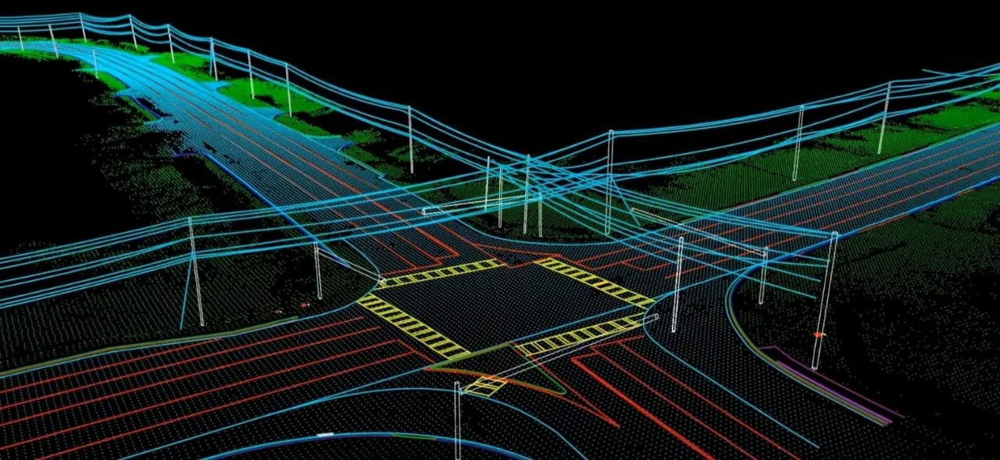

01 · INPUTS
Source-data and scope review
Review source coverage, coordinate systems, point-cloud density or imagery suitability, intended use and detail requirements.

We prepare 3D mapping outputs from client-supplied point clouds, imagery and spatial datasets. The work is scoped to the purpose of the model, whether it supports visualization, asset understanding, engineering review or downstream GIS/CAD/BIM use.

POINT CLOUD ENGINEERING DATA GIS INTELLIGENCEA useful 3D output starts with an agreed purpose, coordinate reference, level of detail and target format. We align geometry, attributes and model organization with how the client expects to view, measure, share or reuse the results.
Review source coverage, coordinate systems, point-cloud density or imagery suitability, intended use and detail requirements.
Prepare terrain, structure or asset representations appropriate to the selected workflow and agreed level of detail.
Check model completeness, spatial reference, naming, geometry quality and compatibility with the target GIS/CAD/BIM workflow.
3D mapping can mean a classified point cloud, terrain surface, textured mesh, building model or web-ready 3D scene. The right output depends on measurement needs, visual quality, update frequency and target software.
Prepare ground and surface representations from suitable source data, review voids and artifacts, and confirm breaklines, contour interval and coordinate system against the specification.
Organize or derive 3D objects from LiDAR, photogrammetry or other client-supplied data. Texture, semantic detail and geometric accuracy should be selected according to the intended use.
Prepare suitable exports for GIS, CAD, BIM or web visualization where scoped, and balance detail with file size, tiling and interactive performance.
Coordinate alignment, vertical reference, scale, mesh holes, duplicate geometry, texture seams, feature naming and the ability to open the output in its intended target application.
Illustrative outputs from related geospatial workflows. Final deliverables are agreed to the project specification.

The level of detail and measurement tolerances depend on the supplied data and the intended application; these are established in the project specification.